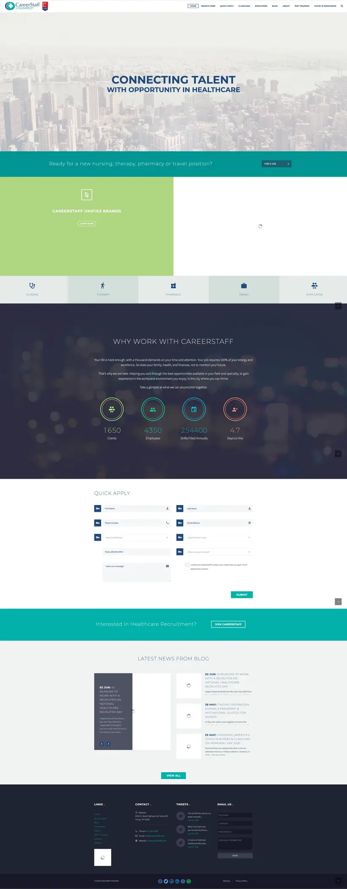
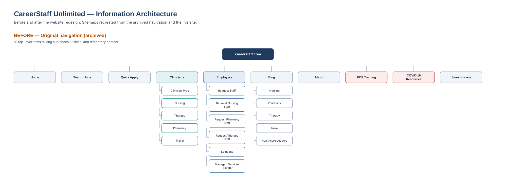
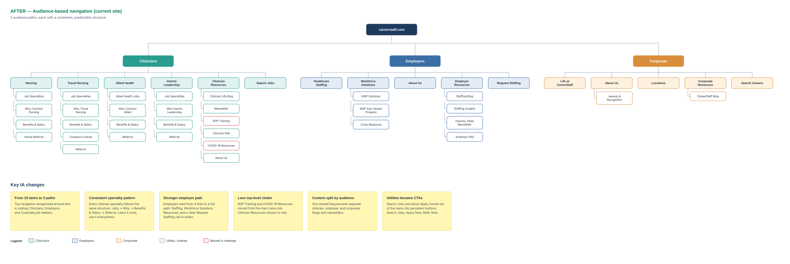
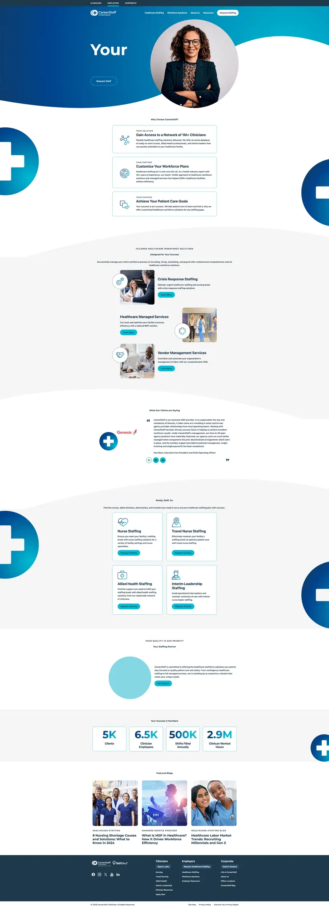
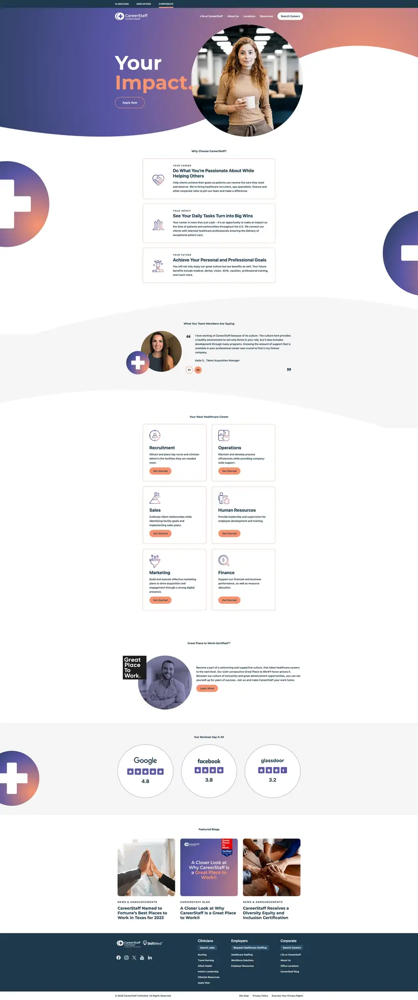

CareerStaff Unlimited
One site. Three audiences. Faster everywhere.
Research, information architecture and optimization that turned a cluttered, slow website into one audience-based experience for clinicians, employers and corporate job seekers.
User journeys tied to business goals
Audience-based navigation, image optimization and a focused RFP landing page connect research and visual design to speed and conversion.
A site trying to talk to everyone at once.
The original site mixed clinicians, employers, utilities and short-term content into one navigation, and heavy images slowed every page. Drag the handle to compare the old homepage with the redesigned clinician page.
- 10 top-level menu items mixing audiences, utilities and temporary content like COVID-19 resources
- No path per audience: everyone landed on the same page and the same message
- One shared blog that was hard to target or measure
- Slow, image-heavy pages that kept loading long after they opened


From ten menu items to three clear paths.
I mapped the old structure, then designed an audience-based one: Clinicians, Employers and Corporate, each following the same predictable pattern. Switch between the sitemaps, and select one to zoom in.


Organized by audience
The top menu is built around who’s visiting.
One pattern per specialty
Jobs, Why, Benefits & Salary, Referral. Learn it once.
A stronger employer path
From 4 links to Staffing, Solutions, Resources and a Request Staffing CTA.
Less top-level clutter
ROP Training and COVID-19 resources moved under Clinician Resources.
Content split by audience
One blog became separate clinician, employer and corporate blogs.
Utilities became actions
Search Jobs, Apply Now and Refer Now are persistent buttons.
Each audience gets its own color and its own story.
All traffic stays on one site, which makes performance easy to compare in Google Analytics. The top bar switches audiences in one click. Hover a page to scroll it.
My role: the agency designed and built the site. I provided the persona research, helped set the creative direction and site foundation, and partnered with the agency through the build.
Hover to scroll
Hover to scroll
Hover to scrollFaster pages, easier to find, built to convert.
The structure fixed “where do I go.” Optimization fixed “why is this so slow” and “why can’t I find it.”
Optimized one page at a time, compressing and reformatting every image to 80KB or smaller without losing the professional look.
Search visibility
XML sitemaps submitted and a WordPress SEO plugin configured so Google, Bing and Yahoo index every page.
YouTube channel
Keywords, hashtags and descriptions tuned for search, and redesigned thumbnails to earn more clicks.
RFP landing page, 2 client accounts
A landing page built around one conversion path: proof, capabilities and a single request form. It helped secure two new client accounts.